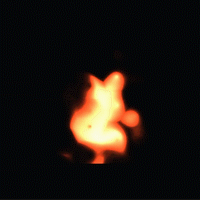
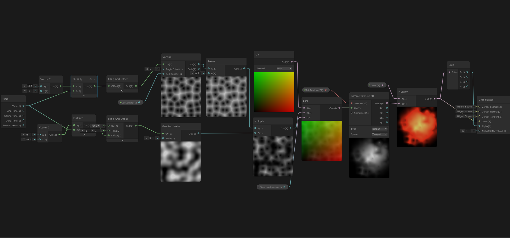
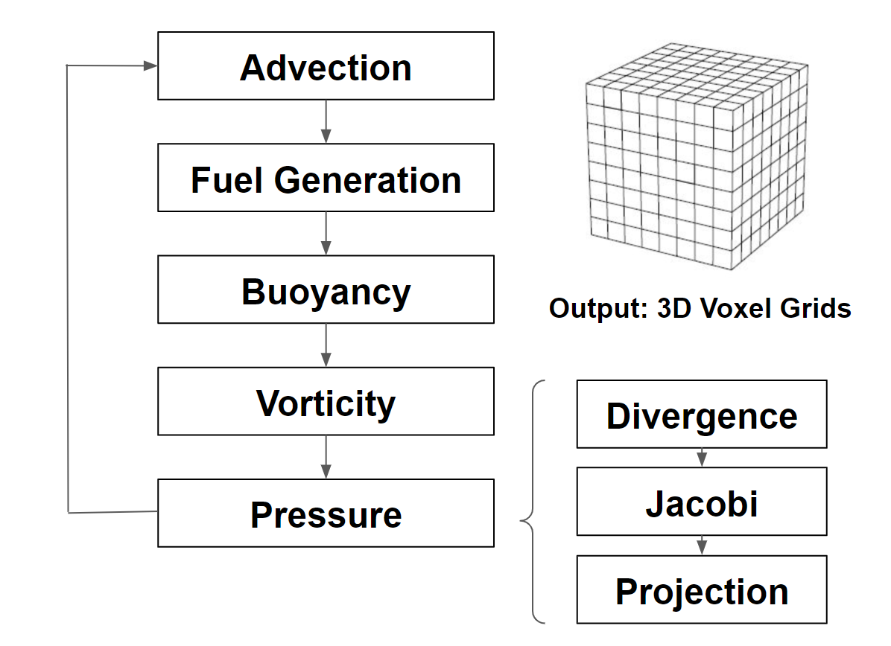
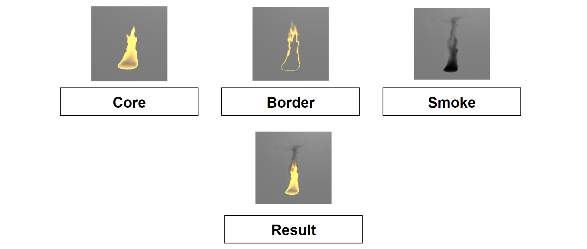
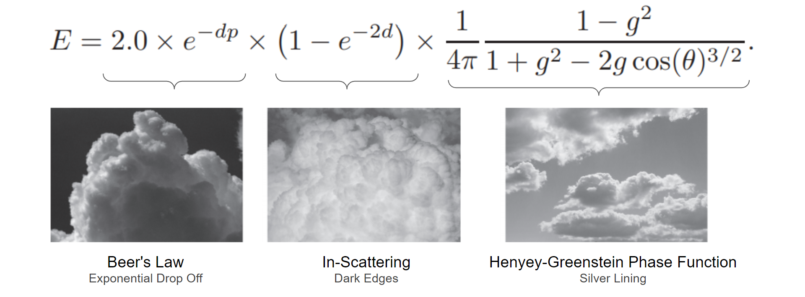
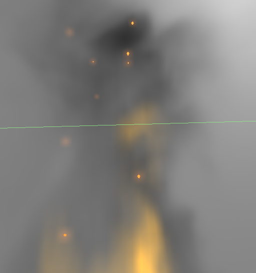

In this project, we achieved real-time simulation and rendering of fire effects in both 2D and 3D. Our implementation utilized the Unity engine and adopted popular techniques in noise generation, physical simulation, and volumetric rendering. Our 2D fire is implemented with panning Voronoi noise and Perlin noise in Unity's built-in shader graph, while our 3D fire relies on custom fluid-simulation and ray-marching HLSL shaders. We measured our rendering effects and performance on an NVIDIA 2060 graphics card and obtained real-time results.

Noise-based 2D Fire
Voxel-based 3D Fire
Technical Approach
2D Fire
We multiplied Voronoi noise and Perlin noise textures and interpolated their product with a standard uv texture. We then used this modified uv to sample a single Gaussian blob to create fire-like variations. Lastly, we applied a color gradient to give an orange color to the result.

Complete Node Graph
3D Fire
Simulation
We decided to use 3D textures to hold different attributes that describe a fire. In our simulation, we calculated the corresponding values for velocity, smoke density, temperature, and fuel level in each cell of a 3D voxelized grid.
We based our simulation off the Navier Stokes equation for fluid dynamics:
$$\frac{\partial u}{\partial t} = -(u \cdot \nabla) u - \frac{1}{\rho} \nabla p + f$$
In the formula, \(u\) is the velocity, \(p\) is the pressure, \(\rho\) is the density of the molecule mass, and \(f\) is the external force on molecules. The first term represents the advection, which is the velocity of a fluid that causes the fluid to transport objects, densities, and other quantities along with the flow. The term inside the parenthesis is the divergence, which represents the rate at which density exits the region. The second term simulates how pressure gathers and generates force and provides accelerations to the surrounding molecules.
For each time step, we compute the advection and divergence based on the interaction between neighboring voxels, and propagate the changes in temperature, pressure, and velocity correspondingly. We then update the values in each 3D texture and render the resulting volume to the screen with the rendering pipeline.
For the external force field of the Navier Stokes equation, we simulated both buoyant force and vorticity force using the following equations:
$$f_{buoyancy} = \frac{Pmg}{R} (\frac{1}{T_0} - \frac{1}{T})z$$
$$f_{vc} = \epsilon(\Psi \times \omega)\delta x$$
$$\Psi = \frac{\eta}{|\eta|}$$
$$\eta = \nabla |\omega|$$
The buoyant force is influenced by temperature and density, and it changes the velocity of molecules to make the simulation more realistic. With a higher temperature, the molecules will rise with a larger velocity. The other force that we applied to our molecules is vorticity force. This force helps us restore some of the curling behavior of smoke that was lost due to the discrete nature of the simulation.
Below is the simulation pipeline that we used. It outputs the values in a set of 3D Textures.

Simulation Pipeline
Rendering
To render the generated fire, we start by injecting a shader into the post-processing stage of the main camera.
Then, we perform ray marching to sample the simulation result passed in as 3D textures. Ray marching is a GPU-friendly technique for sampling a 3D volume along a ray. Specifically, we generate rays starting at the center of the camera in the direction of each pixel. Then, we calculate whether the ray hits our target volume. If it doesn't, then the value we are trying to sample must be 0. Otherwise, we march through the volume in small steps and sample the volume at each step. The average of the samples weighted by the length of the ray inside of the target volume is the value we will use to color that pixel.
Ray Marching
Without accounting for embers, we sample two textures from the simulation result: density and reaction coordinate (fuel). The density value is used to determine the thickness of the smoke, while the reaction coordinate is used to determine the color of the flame. We map the value of the reaction coordiante to a gradient specified by three colors: the core, the border, and the smoke. The end result is a realistic-looking fire:

Components of Fire
Our smoke rendering pipeline borrows exsiting literature on how to render volumetric clouds. Since clouds are comparably brighter and more misty than smoke, we multiply the end result by the smoke color for a more realistic look. In the equation below, \(d\) is the density, \(p\) is the precipitation constant (not used here), \(\theta\) is the angle between the camera ray and the sun, and \(g\) is the eccentricity that defaults to \(0.2\).

Equation for Rendering Smoke
Special Effects
We also added an additional ember effect to the top of the flames. Ember effect are distinct spurts of burning particles that are cause by incompletely combusted fuel that are advected into the air. This special effect is integrated into our physical model by simulating a additional Voxel space of ember particles that are randomly generated at the bottom of the fire with Perlin noise and propelled upwards through advection. Our raymarching procedure detects these particles and add a small glowing aura around them to make them appear realistic.

Ember Close-up
Results
We experimented our simulation and rendering procedure on an NVIDIA RTX 2060 graphics card and achieved real-time (60+ fps) results. We set our voxel grid size to 128*128*128. For our GPU kernels, we used 16*16*16 GPU blocks, each containing 512 threads.
Problems & Lessons Learned
The main difficulty of our implementation came from debugging the propagation of the attributes across timestamps. HLSL shaders typically don't accommodate print debugging so we created a script in Python to cross-validate our formulae. It turned out that the values propagated as expected, which proved that our formulae was correct. We then created a debugging shader, which fills positions in a 3D texture when the value that we are testing passes a certain threshold. We also experimented with debuggers such as RenderDoc and eventually managed to peak inside of our shaders by setting breakpoints.
An interesting quirk of HLSL compute shaders is that a global variables cannot be assigned within the shader file. However, using an assignment operator to declare such variables does not result in a syntax error. We encountered a problem where the values of velocity and pressure remained zero despite our advection kernel changing them at every time step. Using a debug shader, we eventually located the problem as being caused by a zero time-step variable seemingly initialized to a non-zero value at declaration. Manually assigning this variable in our C# driver script before each invocation of the compute kernels solved this problem.